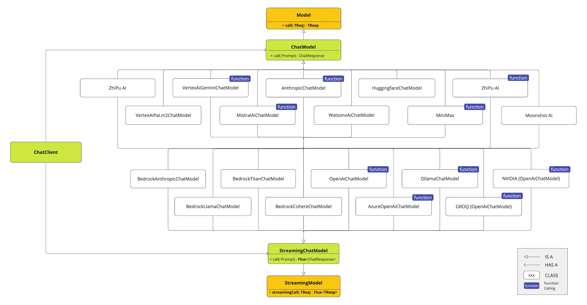
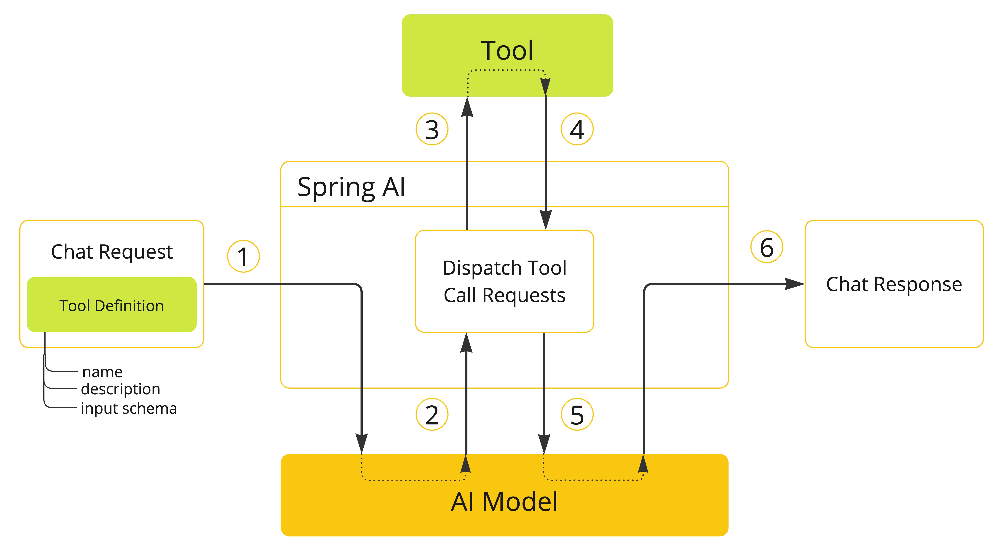
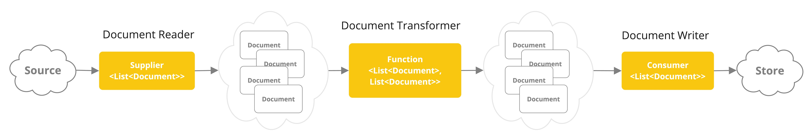

None #
介绍 #
Spring AI API 涵盖了广泛的功能。每个主要功能在其自己的专用部分中进行了详细说明。为了提供概述，可以使用以下关键功能：
AI 模型 API #
跨 AI 提供商的可移植模型 API，用于聊天 、 文本到图像 、 音频转录 、 文本到语音``和``嵌入模型。同步和``流 API 选项均受支持。还支持下拉以访问特定于模型的功能。
支持来自 OpenAI、Microsoft、Amazon、Google、Amazon Bedrock、Hugging Face 等的 AI 模型。

矢量存储 API #
跨多个提供程序的可移植矢量存储 API，包括一个新颖的类似 SQL 的元数据过滤器 API，该 API 也是可移植的。支持 14 个矢量数据库。
工具调用 API #
Spring AI 可以轻松地让 AI 模型作为 @Tool 注释的方法或 POJO java.util.Function 对象调用您的服务。

查看 Spring AI [
工具调用](tools.html)文档。
自动配置 #
AI 模型和向量存储的 Spring Boot 自动配置和启动器。
ETL 数据工程 #
用于数据工程的 ETL 框架。这为将数据加载到向量数据库提供了基础，有助于实施检索增强生成模式，使您能够将数据带到 AI 模型以合并到其响应中。 
反馈和贡献 #
该项目的 [ GitHub 讨论]( https://github.com/spring-projects/spring-ai/discussions)是发送反馈的好地方。